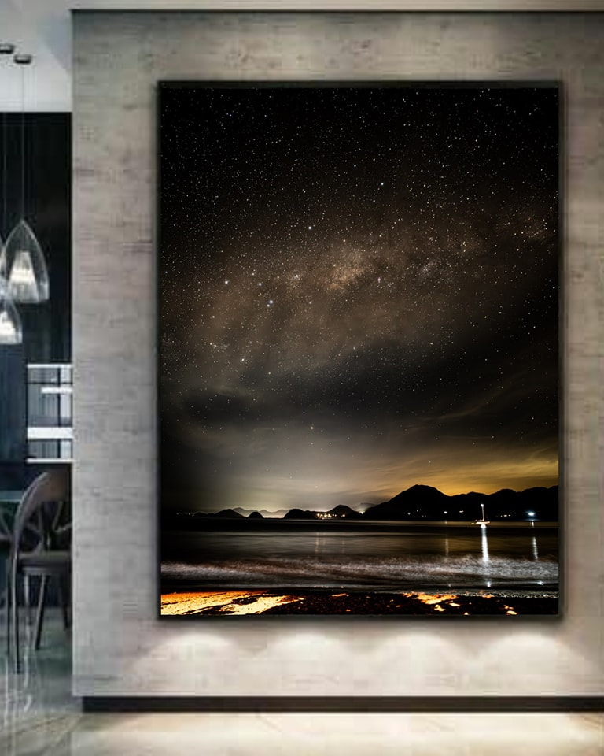

f/8
A obra
Fotografia autoral em tiragem limitada
Acordar cedo, subir a trilha, esperar a luz.
Simulação ilustrativa, fora de escala.

A obra instalada
Fotografia autoral em tiragem limitada
Acordar cedo, subir a trilha, esperar a luz.
Simulação ilustrativa, fora de escala.

A obra instalada